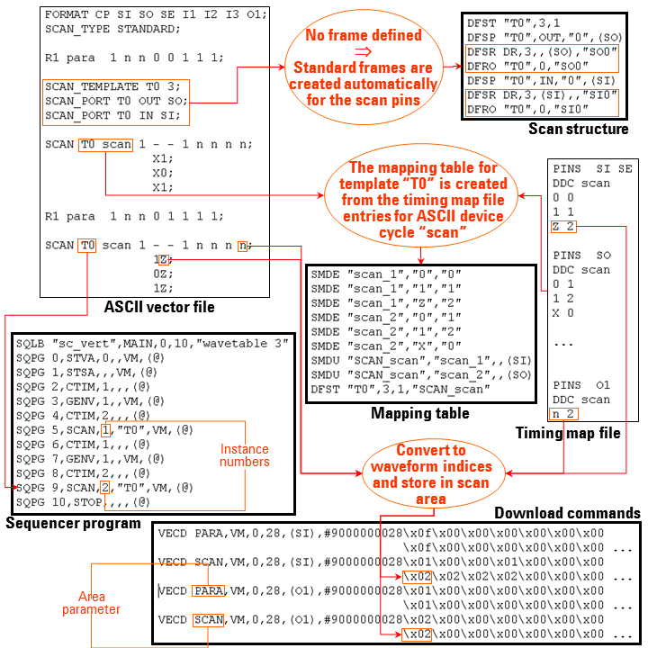

Translating the Scan Setup
The following figure shows how an ASCII vector file for a scan test is translated:

Observe the following points in this figure:
- The vector translation assigns an instance number to every scan instance. Every combination of template and instance number identifies a different, non-overlapping, section of the pin specific scan areas. This section is determined by the position of the respective SCAN instruction within the sequencer area.
- Since the scan data and the parallel data is stored in different areas of the Vector Memory, two vector download commands are present in the vector setup file for every pin of a pattern that contains scan vectors. One of these downloads the scan vectors, the other the parallel vectors.